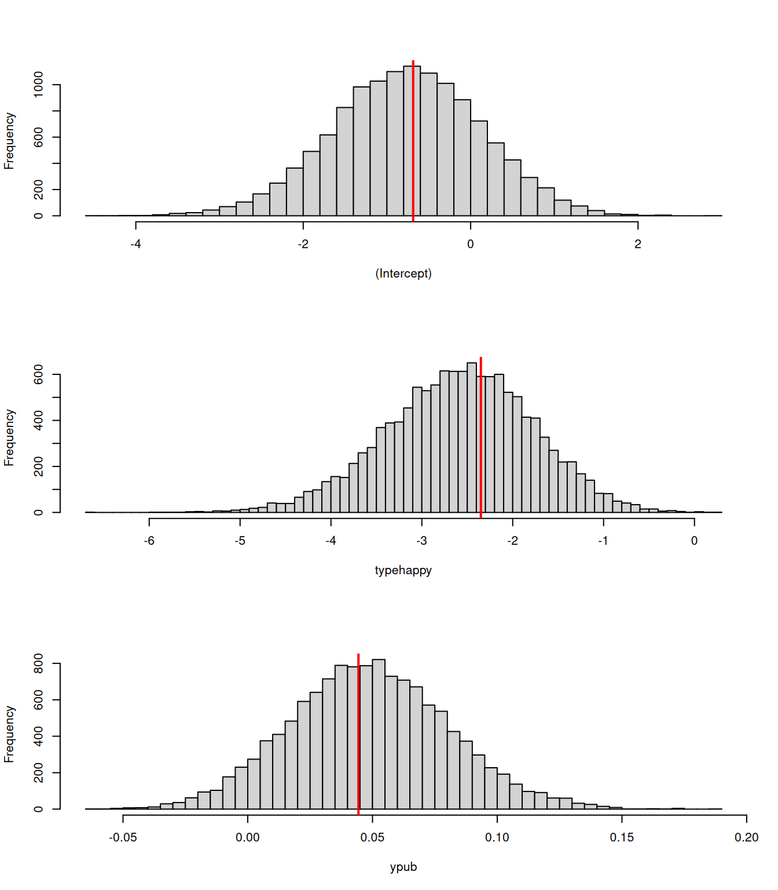

3 Linear and Generalised Linear Models
3.1 Linear Model (LM)
A linear model is one in which unknown parameters are multiplied by (functions of) observed variables and then added together to give a prediction for the response variable. As an example, lets take the results from a Swedish experiment from the sixties:
The experiment involved enforcing speed limits on Swedish roads on some days, but on other days letting everyone drive as fast as they liked. The response variable (y) is the number of accidents recorded. The experiment was conducted in 1961 and 1962 for 92 days in each year. As a first attempt we could specify the linear model:
but what does this mean?
3.1.1 Linear Predictors
The model formula defines a set of simultaneous (linear) equations
\[\begin{array}{cl} E[y\texttt{[1]}] &=\beta_{1}+\beta_{2}(\texttt{limit[1]=="yes"})+\beta_{3}(\texttt{year[1]=="1962"})+\beta_{4}\texttt{day[1]}\\ E[y\texttt{[2]}] &= \beta_{1}+\beta_{2}(\texttt{limit[2]=="yes"})+\beta_{3}(\texttt{year[2]=="1962"})+\beta_{4}\texttt{day[2]}\\ \vdots&=\vdots\\ E[y\texttt{[184]}] &= \beta_{1}+\beta_{2}(\texttt{limit[184]=="yes"})+\beta_{3}(\texttt{year[184]=="1962"})+\beta_{4}\texttt{day[184]}\\ \end{array} \label{SE-eq} \tag{3.1}\]
where the \(\beta\)’s are the unknown coefficients to be estimated, and the variables in \(\texttt{this font}\) are observed predictors. Continuous predictors such as day remain unchanged, but categorical predictors are expanded into a series of binary variables of the form ‘do the data come from 1961, yes or no?’, ‘do the data come from 1962, yes or no?’, and so on for as many years for which there are data.
It is cumbersome to write out the equation for each data point in this way, and a more compact way of representing the system of equations is
\[ E[{\bf y}] = {\bf X}{\boldsymbol{\mathbf{\beta}}} \tag{3.2} \]
where \({\bf X}\) is called a design matrix and contains the predictor information for all observations, and \({\boldsymbol{\mathbf{\beta}}} = [\beta_{1}\ \beta_{2}\ \beta_{3}\ \beta_{4}]^{'}\) is the vector of parameters. Here, \(E[{\bf y}]\) is a vector of the 184 expected values.
## (Intercept) limityes year1962 day
## 1 1 0 0 1
## 2 1 0 0 2
## 184 1 1 1 92The binary predictors do the data come from 1961, yes or no? and there was no speed limit, yes or no? do not appear. These are the first factor levels of year and limit respectively, and are absorbed into the global intercept (\(\beta_{1}\)) which is fitted by default in R. Hence the expected number of accidents for the four combinations (on day zero) are \(\beta_{1}\) for 1961 with no speed limit, \(\beta_{1}+\beta_{2}\) for 1961 with a speed limit, \(\beta_{1}+\beta_{3}\) for 1962 with no speed limit and \(\beta_{1}+\beta_{2}+\beta_{3}\) for 1962 with a speed limit.
The simultaneous equations defined by Equation (3.2) cannot be solved directly because we do not know the left-hand side - expected values of \(y\). We only know the observed value, which we assume is distributed around the expected value with some error. In a normal linear model we assume that these errors (residuals) are normally distributed:
\[{\bf y}-{\bf X}{\boldsymbol{\mathbf{\beta}}} = {\bf e} \sim N(0, \sigma^{2}_{e}{\bf I})\]
\({\bf I}\) is a \(184\times 184\) identity matrix. It has ones along the diagonal, and zeros in the off-diagonals. The zero off-diagonals imply that the residuals are uncorrelated, and the ones along the diagonal imply that they have the same variance (\(\sigma^{2}_{e}\)). Thinking about the distribution of residuals is less helpful when we move on to GLM’s and so I prefer to think about the model in the form:
\[{\bf y}\sim N({\bf X}{\boldsymbol{\mathbf{\beta}}}, \sigma^{2}_{e}{\bf I})\]
and say the response is conditionally normal, with the conditioning on the model (\({\bf X}{\boldsymbol{\mathbf{\beta}}}\)). It is important to note that this is different from saying the response is normal. If having a speed limit had a very strong effect the (marginal) distribution of the response may be bimodal and far from normal, and yet by including speed-limit as a predictor, conditional normality may be achieved.
We could use MCMCglmm to fit this model, but to connect better with what comes next, let’s use glm to estimate \({\bf \beta}\) and \(\sigma^{2}_{e}\) assuming that the number of accidents follow a conditional normal distribution (the MCMCglmm syntax is identical):
##
## Call:
## glm(formula = y ~ limit + year + day, data = Traffic)
##
## Coefficients:
## Estimate Std. Error t value Pr(>|t|)
## (Intercept) 21.13111 1.45169 14.556 < 2e-16 ***
## limityes -3.66427 1.35559 -2.703 0.00753 **
## year1962 -1.34853 1.31121 -1.028 0.30511
## day 0.05304 0.02355 2.252 0.02552 *
## ---
## Signif. codes: 0 '***' 0.001 '**' 0.01 '*' 0.05 '.' 0.1 ' ' 1
##
## (Dispersion parameter for gaussian family taken to be 71.80587)
##
## Null deviance: 14128 on 183 degrees of freedom
## Residual deviance: 12925 on 180 degrees of freedom
## AIC: 1314.5
##
## Number of Fisher Scoring iterations: 2On day zero in 1961 in the absence of a speed limit we expect 21.1 accidents (the intercept). With a speed limit we expect 3.7 fewer accidents and we can quite confidently reject the null-hypothesis of no effect - particularly if we were willing to use a one-tailed test, which seems reasonable. There are 1.3 fewer accidents in 1962, although this could just be due to chance, and for every unit increase in \(\texttt{day}\) the number of accidents is predicted to go up by 0.05. The \(\texttt{day}\) variable is encoded as integers from 1 to 92 with the same \(\texttt{day}\) in different years being comparable (for example, the same day of the week and roughly the same date). If \(\texttt{day}\)’s are evenly spaced throughout the year the \(\texttt{day}\) effect is roughly the effect of increasing calender date by four (365/92) days. The estimate of the residual variance, \(\sigma^2_e\), is the dispersion parameter (71.8).
Because the number of accidents are count data we might worry about the assumption of conditional normality, and indeed the residuals show the typical right skew:
Figure 3.1: Histogram of residuals from model m2a.1 which assumed they followed a Normal distribution.
It’s not extreme, and the conclusions probably won’t change, but we could assume that the data follow some other distribution.
3.2 Generalised Linear Model (GLM)
Generalised linear models extend the linear model to non-normal data. They are essentially the same as the linear model described above, except they differ in two aspects. First, it is not necessarily the mean response that is predicted, but some function of the mean response. This function is called the link function. For example, with a log link we are trying to predict the logged expectation:
\[\textrm{log}(E[{\bf y}]) = {\bf X}{\boldsymbol{\mathbf{\beta}}}\]
or alternatively
\[E[{\bf y}] = \textrm{exp}({\bf X}{\boldsymbol{\mathbf{\beta}}})\]
where \(\textrm{exp}\) is the inverse of the log link function- exponentiating. The second difference is that many distributions are single parameter distributions for which a variance does not need to be estimated because it can be inferred from the mean. For example, we could assume that the number of accidents are Poisson distributed, in which case we also make the assumption that the variance is equal to the expected value. Technically, GLM’s only apply to a restricted set of distributions (those in the exponential family) but \(\texttt{MCMCglmm}\) can accommodate a range of GLM-like models for other distributions (see Table 11.1).
3.3 Poisson GLM
For now we will concentrate on a Poisson GLM with log link (the default link function for the Poisson distribution):
##
## Call:
## glm(formula = y ~ limit + year + day, family = poisson, data = Traffic)
##
## Coefficients:
## Estimate Std. Error z value Pr(>|z|)
## (Intercept) 3.0467406 0.0372985 81.685 < 2e-16 ***
## limityes -0.1749337 0.0355784 -4.917 8.79e-07 ***
## year1962 -0.0605503 0.0334364 -1.811 0.0702 .
## day 0.0024164 0.0005964 4.052 5.09e-05 ***
## ---
## Signif. codes: 0 '***' 0.001 '**' 0.01 '*' 0.05 '.' 0.1 ' ' 1
##
## (Dispersion parameter for poisson family taken to be 1)
##
## Null deviance: 625.25 on 183 degrees of freedom
## Residual deviance: 569.25 on 180 degrees of freedom
## AIC: 1467.2
##
## Number of Fisher Scoring iterations: 4While the sign of the effects are comparable to that seen in the linear model, their numerical values are completely different and the significance of all effects has increased dramatically. Should we worry? The model is defined on the log scale and so to get back to the data scale we need to exponentiate. Exponentiating the intercept gives us the predicted number of accidents on day zero in 1961 without a speed limit:
## (Intercept)
## 21.04663which is very close to the intercept in the linear model (21.131), which is reassuring.
To get the prediction for the same day with a speed limit we need to add the \(\texttt{limityes}\) coefficient
## (Intercept)
## 17.66892With a speed limit there are expected to be 0.840 as many accidents than if there was no speed limit. This value can be more directly obtained:
## limityes
## 0.8395127and holds true for any given day in either year. The proportional change is identical because the model is linear on the log scale and \(exp(\beta+\dots)=exp(\beta)exp(\dots)\). There is not always a direct relationship with the corresponding coefficients from the linear model but we can reassure ourselves that the parameters have the same qualitative meaning. For example, for \(\texttt{day}\) 0 in 1961 the linear model predicts a drop from 21.1 to 17.5 accidents when a speed limit is in place - around 0.83 as many accidents, comparable to that predicted in the log-linear model.
So in terms of the reported coefficients, the linear model and the Poisson log-linear model are roughly consistent with each other. However, in terms of accurately quantifying the uncertainty in those coefficients the Poisson model has a serious problem - it is very over confident.
3.4 Overdispersion
Most count data do not conform to a Poisson distribution because the variance in the response exceeds the expectation. In the summary to m2a.2 the ratio of the residual deviance to the residual degrees of freedom is 3.162 which means, roughly speaking, there is 3.2 times more variation in our response (after conditioning on the model) than what we expect. This is known as overdispersion and it is easy to see how it arises, and why it is so common.
If the predictor data had not been available to us then the only model we could have fitted was one with just an intercept:
##
## Call:
## glm(formula = y ~ 1, family = "poisson", data = Traffic)
##
## Coefficients:
## Estimate Std. Error z value Pr(>|z|)
## (Intercept) 3.07033 0.01588 193.3 <2e-16 ***
## ---
## Signif. codes: 0 '***' 0.001 '**' 0.01 '*' 0.05 '.' 0.1 ' ' 1
##
## (Dispersion parameter for poisson family taken to be 1)
##
## Null deviance: 625.25 on 183 degrees of freedom
## Residual deviance: 625.25 on 183 degrees of freedom
## AIC: 1517.2
##
## Number of Fisher Scoring iterations: 4for which the residual variance exceeds that expected by a factor of 3.5. Of course, the variability in the residuals must go up if there are factors that influence the number of accidents, but which we hadn’t measured. It’s likely that in most studies there are things that influence the response that haven’t been measured, and even if each thing has a small effect individually, in aggregate they can cause substantial overdispersion.
3.4.1 Multiplicative Overdispersion
There are two ways of dealing with overdispersion. With glm the distribution name can be prefixed with quasi and a dispersion parameter estimated:
##
## Call:
## glm(formula = y ~ limit + year + day, family = quasipoisson,
## data = Traffic)
##
## Coefficients:
## Estimate Std. Error t value Pr(>|t|)
## (Intercept) 3.046741 0.067843 44.909 < 2e-16 ***
## limityes -0.174934 0.064714 -2.703 0.00753 **
## year1962 -0.060550 0.060818 -0.996 0.32078
## day 0.002416 0.001085 2.227 0.02716 *
## ---
## Signif. codes: 0 '***' 0.001 '**' 0.01 '*' 0.05 '.' 0.1 ' ' 1
##
## (Dispersion parameter for quasipoisson family taken to be 3.308492)
##
## Null deviance: 625.25 on 183 degrees of freedom
## Residual deviance: 569.25 on 180 degrees of freedom
## AIC: NA
##
## Number of Fisher Scoring iterations: 4glm uses a multiplicative model of overdispersion and so the estimate of the dispersion parameter is roughly equivalent to how many times greater the variance is than expected, after taking into account the predictor variables. You will notice that although the parameter estimates have changed very little, the standard errors have gone up and the significance gone down. Overdispersion, if not dealt with, can result in extreme anti-conservatism. For example, the second lowest number of accidents (8) occurred on \(\texttt{day}\) 91 of 1961 without a speed limit. Our model predicts this should have been the second worst day for accidents over the whole two years, and the probability of observing 8 or less accidents on this day is predicted to be approximately 3 in a 100,000:
## [1] 3.195037e-05If we did not accommodate the overdispersion, anything additional we put in in the model that could potentially explain such an improbable occurrence would come out as significant even if in reality it wasn’t important. This is because there simply isn’t any flexibility in the null model to accommodate such occurrences. For example, if the extreme value happened to be associated with a particular level of a categorical predictor or happened to be associated with an extreme value of some continuous predictor, then the coefficients associated with these predictors may well come out as significant. However, under a more plausible null model the extreme observations may not be too surprising and there may be little support for the predictors having an effect on the response. A more plausible model, and one that we’ve alluded to, would be to allow the number of accidents to vary across sampling points due to unmeasured variables. This would allow the variation in the number of accidents to exceed the predicted mean based on the measured variables (the assumption of the standard Poisson).
3.4.2 Additive Overdispersion
I believe that a model assuming all relevant variables have been measured or controlled for, should not be the default model, and so when you specify family=poisson in \(\texttt{MCMCglmm}\), overdispersion is always dealt with4. However, \(\texttt{MCMCglmm}\) does not use a multiplicative model, but an additive model.
prior <- list(R = list(V = 1, nu = 0.002))
m2a.5 <- MCMCglmm(y ~ limit + year + day, family = "poisson", data = Traffic, prior = prior,
pl = TRUE)The element Sol contains the posterior distribution of the coefficients of the linear model, and we can plot their marginal distributions:
Figure 3.2: MCMC summary plot for the coefficients from a Poisson glm (model m2a.5).
Note that the posterior distribution for the year1962 spans zero, in agreement with the quasipoisson glm model, and that in general the estimates for the two models (and their uncertainty - see Section 2.4.2) are broadly similar:
##
## Call:
## glm(formula = y ~ limit + year + day, family = quasipoisson,
## data = Traffic)
##
## Coefficients:
## Estimate Std. Error t value Pr(>|t|)
## (Intercept) 3.046741 0.067843 44.909 < 2e-16 ***
## limityes -0.174934 0.064714 -2.703 0.00753 **
## year1962 -0.060550 0.060818 -0.996 0.32078
## day 0.002416 0.001085 2.227 0.02716 *
## ---
## Signif. codes: 0 '***' 0.001 '**' 0.01 '*' 0.05 '.' 0.1 ' ' 1
##
## (Dispersion parameter for quasipoisson family taken to be 3.308492)
##
## Null deviance: 625.25 on 183 degrees of freedom
## Residual deviance: 569.25 on 180 degrees of freedom
## AIC: NA
##
## Number of Fisher Scoring iterations: 4With additive overdispersion the linear predictor includes a ‘residual’, for which a residual variance is estimated (hence our prior specification).
\[E[{\bf y}] = \textrm{exp}({\bf X}{\boldsymbol{\mathbf{\beta}}}+{\bf e})\]
At this point it will be handy to represent the linear model in a new way:
\[{\bf l} = {\boldsymbol{\mathbf{\eta}}}+{\bf e}\]
where \({\bf l}\) is a vector of latent variables (\(\textrm{log}(E[{\bf y}])\) in this case) and \({\boldsymbol{\mathbf{\eta}}}\) is the usual symbol for the linear predictor (\({\bf X}{\boldsymbol{\mathbf{\beta}}}\)). The data we observe are assumed to be Poisson variables with expectation equal to the exponentiated latent variables:
\[{\bf y} \sim Pois(\textrm{exp}({\bf l}))\]
Note that the latent variable does not exactly predict \(y\), as it would if the data were Normal, because there is additional variability in the Poisson process5. In the call to \(\texttt{MCMCglmm}\) I specified pl=TRUE to indicate that I wanted to store the posterior distributions of the latent variables (also known as the liabilities). This is not usually necessary and can require a lot of memory (we have 1000 posterior samples for each of the 182 data points). However, as an example we can obtain the posterior mean residual for data point 92 which is the data from \(\texttt{day}\) 92 in 1961 when there was no speed limit:
lat92 <- m2a.5$Liab[, 92]
# posterior distribution of the 92nd latent variable (liability)
eta92 <- m2a.5$Sol[, "(Intercept)"] + m2a.5$Sol[, "day"] * Traffic$day[92]
# posterior distribution of X\beta for the 92nd observation
resid92 <- lat92 - eta92
# posterior distribution of e for the 92nd observation
mean(resid92)## [1] -0.1341791This particular observation has a negative expected residual indicating that the probability of getting injured was less than expected for this particular realisation of that \(\texttt{day}\) in that year without a speed limit. If that combination of predictors (\(\texttt{day}\)=92, \(\texttt{year}\)=1961 and \(\texttt{limit}\)=\(\texttt{no}\)) could be repeated it does not necessarily mean that the actual number of accidents would always be less than expected, because it would follow a Poisson distribution with a mean equal to exp(lat92) (21.974).
Like residuals in a standard linear model, the residuals are assumed to be independently and normally distributed with an expectation of zero and an estimated variance. If the residual variance was zero then \({\bf e}\) would be a vector of zeros and the model would conform to the standard Poisson GLM. However, the posterior distribution of the residual variance is located well away form zero:
Figure 3.3: MCMC summary plot for the residual (units) variance from a Poisson glm (model m2a.5). The residual variance models any overdispersion, and a residual variance of zero would imply that the response conforms to a standard Poisson.
3.5 Prediction in GLM
To get the expected number of accidents for the 92nd observation we simply exponentiated the latent variable: exp(lat92). However, it is important to realise that this is the expected number had the residual been exactly equal to the observed residual for that observation (resid92): we are calculating the expected number conditional on the set of unmeasured variables that affected that particular realisation of \(\texttt{day}\) 92 in 1961 without a speed limit. When calculating a prediction we usually aim to average over these residuals (or random effects - see ??) since we would like to know what the average response would be for observations made on a \(\texttt{day}\) of type 92 in 1961 without a speed limit. On the log-scale the expectation is simply the linear predictor (\(\eta\)):
\[ log(E_e[y]) = E_e[l] = E_e[\eta+e] = \eta+E_e[e]=\eta \]
since the residuals have zero expectation (here I have subscripted the expectation with the variable we are averaging over). The predict function can be applied to MCMCglmm objects and if we specify type="terms" we get the prediction of the link scale - the log scale in this case:
## [1] 3.224037which is equal to the posterior mean of eta92 obtained earlier. We can see this visually in Figure 3.4 where I have plotted the distribution of the latent variable on a \(\texttt{day}\) of type 92 in 1961 without a speed limit.
Figure 3.4: The predicted distribution for the average number of accidents on the log scale for a \(\texttt{day}\) of type 92 in 1961 without a speed limit (in red). On the log scale the distribution is assumed to be normal around the linear predictor (\(\eta=\)) with a variance of \(\sigma^{2}_e\). As a consequence the mean, median and mode of the distribution are equal to the linear predictor on the log scale.
To get the prediction on the data scale (i.e. in terms of the actual expected number of accidents) it is tempting to think we could just calculate exp(eta92). However, this is the expected number of accidents had the residual been exactly zero. If we wish to average over the residuals we require:
\[ E_e[y] = E_e[\textrm{exp}(l)] = E_e[\textrm{exp}(\eta+e)] \]
and because exponentiation is a non-linear function this average will deviate from \(\textrm{exp}(\eta)\) (Figure 3.5.
![The predicted distribution for the average number of accidents on the data scale for a $\texttt{day}$ of type 92 in 1961 without a speed limit (in red). On the log scale the distribution is assumed to be normal around the linear predictor ($\eta$) with a variance of $\sigma^{2}_e$ (see \@ref(fig:prediction2)). However when transforming to the data scale (by exponentiating) the symmetry is lost and the different measures of central tendency do not coincide. Since the residuals are normal on the log scale, the distribution on the data scale is log-normal and so analytical solutions exist for the mean, mode and median.](MCMCglmm-course-notes_files/figure-html/prediction3-1.png)
Figure 3.5: The predicted distribution for the average number of accidents on the data scale for a \(\texttt{day}\) of type 92 in 1961 without a speed limit (in red). On the log scale the distribution is assumed to be normal around the linear predictor (\(\eta\)) with a variance of \(\sigma^{2}_e\) (see 3.4). However when transforming to the data scale (by exponentiating) the symmetry is lost and the different measures of central tendency do not coincide. Since the residuals are normal on the log scale, the distribution on the data scale is log-normal and so analytical solutions exist for the mean, mode and median.
To obtain predictions on the data scale we can specify type="response" (the default) when using predict:
## [1] 26.48956which is slightly greater than exp(eta92) (25.183). For all link-functions, the median value on the data scale can be easily calculated by taking the inverse-link transform of the linear predictor. However, obtaining the mean and mode is often more challenging than it is for log-link, and numerical integration or approximations are required.
The predict function is returning a single number for observation 92 yet the model object contains 1,000 samples from the posterior distribution of all model parameters. This is because the predict function returns the posterior mean of the predicted value. Since we have the complete posterior distribution we can also place a 95% credible interval on the prediction (see Section 2.4.2):
## fit lwr upr
## 26.48956 23.27675 30.107163.5.1 Posterior Predictive Distribution
In some cases we would like to visualise or summarise aspects of the predictive distribution other than the mean. The complete predictive distribution is hard to work with, but the simulate function allows you to draw samples from the predictive distribution. The default is to generate a sample using a random draw from the posterior distribution, resulting in a draw from what is known as the posterior predictive distribution:
We can use these simulated values to characterise any aspect of the predictive distribution we want. For example, we can obtain quantiles and compare them to the quantiles of the actual data to see how well the model captures aspects of the observed marginal distribution:

Figure 3.6: qq-plot of the posterior predictive distribution and the data distribution
Not too bad, although the predictive distribution perhaps has greater support for extreme values than are observed. If we merely wish to know the interval in which some specified percentage of the data are predicted to lie, we can also use the predict function but with interval="prediction". By default the 95% (highest posterior density) interval is calculated using as many simulated samples as there are saved posterior samples. For the 92nd observation the prediction interval is
## fit lwr upr
## 26.696 10.000 47.000Note that the reported mean (fit) differs from that returned by interval="confidence" due to Monte Carol error only.
3.6 Binomial and Bernoulli GLM
The general concepts introduced for the Poisson GLM extend naturally to Binomial data, albeit with a different link function. However, it is worth spending a little time exploring a Binomial GLM as I think overdispersion, and how we deal with it, is easier to understand with binomial data. However, we’ll also see how the ‘residuals’ defined earlier for capturing overdispersion complicate the analysis of Bernoulli data and result in MCMcglmm using a non-standard parameterisation.
The Binomial distribution has two parameters - the number of trials \(n\) and the probability of success, \(p\). In a Binomial GLM the number of trials is assumed known leaving only \(p\) to be estimated from the number of trials that are ‘successes’ or ‘failures’. When family="binomial" is specified (or equivalently family="multinomial2") MCMCglmm uses the standard link function for the Binomial - the logit link - and the logit probability of success is modelled as
\[log\left(\frac{p}{1-p}\right) = l = \eta+e\]
The logit transform takes a probability and turns it into a log odds ratio. If we want to get back to the probability we use the inverse of the logit transform:
\[p = \frac{exp(l)}{1+exp(l)}\]
The logit link is actually the quantile function for the logistic distribution and so is available as the function qlogis. The inverse of a quantile function is a cumulative distribution function and so the inverse-logit transform is plogis.
To introduce the Binomial GLM we will analyse some data I collected on how grumpy my colleagues look. I took two photos (\(\texttt{photo}\)) of 22 people (\(\texttt{person}\)) working in the Institute of Evolution and Ecology, Edinburgh. In one photo the person was happy and in the other they were grumpy (\(\texttt{type}\)). 122 respondents gave a score between 1 and 10 indicating how grumpy they thought each person looked in each photo (with 10 being the most grumpy).
## y l5 g5 type photo person age ypub
## 1 4.032787 101 21 grumpy 4511 ally_p 38 13
## 2 3.081967 113 9 happy 4512 ally_p 38 13
## 3 7.885246 15 107 grumpy 4521 darren_o 38 16
## 44 3.798319 105 14 happy 4516 laura_r 34 10\(\texttt{y}\) gives the average score given by the 122 respondents. The number of respondents giving a photo a score of five or less (\(\texttt{l5}\)) or more than five (\(\texttt{g5}\)) is also recorded in addition to the person’s age (\(\texttt{age}\)) and a proxy for how long they had been academia - the number of years since they published their first academic paper (\(\texttt{ypub}\)). Here, we will model the probability of getting a grumpy score greater than five as a function of whether the person was happy or grumpy and how long they had been in academia. As with glm, successes should be in the first column of the response, and failures in the second:
mbinom.1 <- MCMCglmm(cbind(g5, l5) ~ type + ypub, data = Grumpy, family = "multinomial2",
pl = TRUE)
summary(mbinom.1)##
## Iterations = 3001:12991
## Thinning interval = 10
## Sample size = 1000
##
## DIC: 5377.999
##
## R-structure: ~units
##
## post.mean l-95% CI u-95% CI eff.samp
## units 1.348 0.7597 1.947 1000
##
## Location effects: cbind(g5, l5) ~ type + ypub
##
## post.mean l-95% CI u-95% CI eff.samp pMCMC
## (Intercept) -0.72025 -1.67538 0.05147 1000 0.094 .
## typehappy -1.28167 -1.97027 -0.59820 1000 <0.001 ***
## ypub 0.02064 -0.00613 0.05175 1105 0.156
## ---
## Signif. codes: 0 '***' 0.001 '**' 0.01 '*' 0.05 '.' 0.1 ' ' 1The model coefficients are most easily interpreted after exponentiating as they then give the proportional change in the odds ratio. The odds of having a score greater than five is exp(-1.282)=0.278 times lower when happy, as expected. The odds increases by a factor exp(0.021)=1.021 for each year in academia. When the coefficient is small in magnitude like this, you can get a rough estimate by looking directly at the coefficient: 0.021 roughly translates into a 2.1% increase and -0.021 would translate into a 2.1% decrease6. The \(\texttt{units}\) (residual) variance is also large with credible intervals that are far from zero.
3.6.1 Overdispersion
As with overdispersion in the Poisson model, this excess variation can be attributed to predictors that are not included in the model but cause the probability of success to vary over observations (photos in this case). For example, the 3rd and 25th observation have the same values for every predictor
## y l5 g5 type photo person age ypub
## 3 7.885246 15 107 grumpy 4521 darren_o 38 16
## 25 5.319672 73 49 grumpy 4527 craig_w 38 16and so in the absence of overdispersion these parameters would result in a predicted probability of success of
\[p = \textrm{plogis}(\beta_{\texttt{(Intercept)}}+\beta_{\texttt{typehappy}}\times0+\beta_{\texttt{ypub}}\times16)=0.404 \label{plogis-eq} \tag{3.3}\]
Given there were 122 respondents (trials) we can calculate the two values between which the number of successes is expected to fall 95 % of the time.
## [1] 39 60While photo \(\texttt{4527}\) is well within the range with 49 successes, the number of respondents giving photo \(\texttt{4521}\) is substantially higher (107) - it’s an outlier. In Figure 3.7 the two photos are shown and it is clear why their underlying probabilities may deviate from that predicted. Most obviously the two photos are of different people and people vary in how grumpy they look. Since we have two photos per person we could (and should) estimate \(\texttt{person}\) effects, however this is best done by treating these effects as random, which we will cover later, in Chapter 4. Even if \(\texttt{person}\) effects were fitted there’s also likely to be a whole host of observation-level (photo-specific) effects that are not captured in the model such as whether the person had their eyes closed or was wearing a dreary grey fleece.

Figure 3.7: Photo 4521 (left) and photo 4527 (right). For the predictors fitted in model mbinom.1, these photos have the same values (\(\texttt{type}=\texttt{grumpy}\) and \(\texttt{ypub}=16\) years)
If we include the ‘residuals’ when calculating the predicted probability for these two photos we can see that indeed their probabilities are quite different:
## [1] 0.8621967## [1] 0.40014463.6.2 Prediction
When calculating the predicted probability in the absence of the residuals in Equation (3.3) I was careful to say that the prediction assumed an absence of overdispersion. However, when overdispersion is present we need to average over the distribution of the residuals in order to get an average. As we saw in the log-linear Poisson model, because the inverse-link function (plogis) is non-linear the average of \(E_e[\texttt{plogis}(\eta+e)]\) is different from \(\texttt{plogis}(E_e[\eta+e])=\texttt{plogis}(\eta)\). Unlike the Poisson log-linear model this expectation cannot be calculated analytically and the predict function by default numerically evaluates the integral:
\[\int_l \texttt{plogis}(l)f_N(l, \eta, \sigma^2_e)dl\]
where \(f_N\) is the probability density function of the normal. For each of the 44 observations this is done 1,000 times (the number of saved posterior samples) to get the posterior mean prediction and can be very slow (it is actually faster to fit the model). The number reported by predict is \(np\) rather than \(p\) and so to get the predicted probability for a photo of someone who has grumpy and had been publishing for 16 years we can get the prediction for the 3rd observation and divide by the number of trials (122):
## [1] 0.4243498A little different from \(\texttt{plogis}(\eta)=\) 0.404. For the binomial with logit link, analytical approximations have been developed in Diggle et al. (2004) and McCulloch and Searle (2001) which are considerably faster and reasonably accurate:
## [1] 0.4210936## [1] 0.42553963.6.3 Bernoulli GLM
Bernoulli data are a special case of the Binomial in which the number of trials is equal to one and so either a success or a failure is observed. To explore a Brenoulli model we can take our average Grumpy scores and simply dichotomise them into whether the average score was five or less or more than five:
If we fit a binomial model to these data in MCMCglmm it has exactly the same form as before (although a single column of outcomes can be passed). But importantly, for Bernoulli data there is no information to estimate the residual variance. This does not necessarily mean that variation in the probability of success across observations is absent, only that we can’t estimate it. For example, imagine we took 100 people who had been publishing for 16 years and took a photograph of them when they were grumpy. Let’s say the probability that the mean score for such photos exceeded 5 was 0.5. If the probability for all photos was exactly 0.5 (i.e. the probability of success did not vary over observations) then we expect 50 success and 50 failures across our observations. However, imagine the case where the probability of success was 100% for 50 photos and 0% for 50 photos (i.e. the probability of success varies considerably over observations). We would also expect 50 success and 50 failures, and so the distribution of successes with and without variation in the underlying probability would be identical. In the absence of information most software sets the ‘residual’ variance to zero (i.e. the probability of success dose not vary over observations), but it is important to understand that this is a convenient but arbitrary choice. Given this, it is desirable that any conclusions drawn from the model do not depend on this arbitrary choice. Worryingly, both the location effects (fixed and random) and variance components are completely dependent on the magnitude of the residual variance. MCMCglmm allows the user to fix the residual variance at a value of their choice, but unfortunately a value of zero results in a chain that will not mix and so I usually fix the residual variance to one7:
prior.mbinom.2 = list(R = list(V = 1, fix = 1))
mbinom.2 <- MCMCglmm(majority ~ type + ypub, family = "categorical", data = Grumpy,
prior = prior.mbinom.2)However, it would have been equally valid to fixed the residual variance at three:
prior.mbinom.3 = list(R = list(V = 3, fix = 1))
mbinom.3 <- MCMCglmm(majority ~ type + ypub, family = "categorical", data = Grumpy,
prior = prior.mbinom.3)and if we compare the MCMC traces for the coefficients we can see that we are sampling different posterior distributions (Figure 3.8).
Figure 3.8: MCMC trace for coefficients of a Bernoulli GLM from two models (mbinom.2 in black and mbinom.3 in red). The data and model structure are identical but in mbinom.2 the residual variance was set to one and in mbinom.3 the residual variance was set to three. The data provide no information about the residual variance
Should we worry? Not really. We just have to be careful about how we express the results. Stating that the typehappy coefficient is -2.852 (the posterior mean estimate from mbinom.2) is meaningless without putting it in the context of the assumed residual variance (one). The two models give almost identical predictions (Figure ??).

Figure 3.9: Predicted probabilities from a Bernoulli GLM from two models. The data and model structure are identical but in mbinom.2 the residual variance was set to one and in mbinom.3 the residual variance was set to three. The data provide no information about the residual variance.
Although the Diggle et al. (2004) approximation is less accurate than that in (McCulloch.2004?) we can use it rescale the estimates by the estimated residual variance (\(\sigma^{2}_{\texttt{units}}\)) in order to obtain the posterior distributions of the parameters under the assumption that the actual residual variance (\(\sigma^{2}_{e}\)) is equal to some other value. For location effects the posterior distribution needs to be multiplied by \(\sqrt{\frac{1+c^{2}\sigma^{2}_{e}}{1+c^{2}\sigma^{2}_{\texttt{units}}}}\) where \(c=16\sqrt{3}/15\pi\). We can obtain estimates under the assumption that \(\sigma^{2}_{e}=0\) and we see the posterior distributions of the coefficients are very similar from the two models 3.10.
c2 <- ((16 * sqrt(3))/(15 * pi))^2
rescale.2 <- mbinom.2$Sol * sqrt(1/(1 + c2 * 1))
rescale.3 <- mbinom.3$Sol * sqrt(1/(1 + c2 * 3))
plot(mcmc.list(as.mcmc(rescale.2), as.mcmc(rescale.3)), density = FALSE)![MCMC trace for rescaled coefficients of a Bernoulli GLM from two models (`mbinom.2` in black and `mbinom.3` in red). The data and model structure are identical but in `mbinom.2` the residual variance was set to one and in `mbinom.3` the residual variance was set to three. However, the coefficients have been rescaled using the @Diggle.2004 approximation such that they represent what the coefficients would be if the residual variance was zero. The data provide no information about the residual variance.](MCMCglmm-course-notes_files/figure-html/bernoulli-rescale-1.png)
Figure 3.10: MCMC trace for rescaled coefficients of a Bernoulli GLM from two models (mbinom.2 in black and mbinom.3 in red). The data and model structure are identical but in mbinom.2 the residual variance was set to one and in mbinom.3 the residual variance was set to three. However, the coefficients have been rescaled using the Diggle et al. (2004) approximation such that they represent what the coefficients would be if the residual variance was zero. The data provide no information about the residual variance.
par(mfrow = c(3, 1))
m.binom.2.glm <- glm(majority ~ type + ypub, family = "binomial", data = Grumpy)
mbinom.3.plot <- MCMCglmm(majority ~ type + ypub, family = "categorical", data = Grumpy,
prior = prior.mbinom.3, nitt = 13000 * 10)
rescale.3.plot <- mbinom.3.plot$Sol * sqrt(1/(1 + c2 * 3))
hist(rescale.3.plot[, 1], breaks = 50, main = NULL, xlab = "(Intercept)")
abline(v = coef(m.binom.2.glm)[1], col = "red", lwd = 2)
hist(rescale.3.plot[, 2], breaks = 50, main = NULL, xlab = "typehappy")
abline(v = coef(m.binom.2.glm)[2], col = "red", lwd = 2)
hist(rescale.3.plot[, 3], breaks = 50, main = NULL, xlab = "ypub")
abline(v = coef(m.binom.2.glm)[3], col = "red", lwd = 2)
3.7 Complete Separation
It makes sense that a cumulative distribution function for a continuous distribution that can take any value would serve as a good inverse link function:
To demonstrate we will use some data from a pilot study on the Indian meal moth (Plodia interpunctella) and its granulosis virus (PiGV) collected by Hannah Tidbury & Mike Boots at the University of Sheffield.
The data are taken from 874 moth pupae for which the Pupated variable is zero if they failed to pupate (because they were infected with the virus) or one if they successfully pupated. The 874 individuals are spread across 49 full-sib families, with family sizes ranging from 6 to 38.
To start we will fix the residual variance at 1:
prior.m2b.1 = list(R = list(V = 1, fix = 1), G = list(G1 = list(V = 1, nu = 0.002)))
m2b.1 <- MCMCglmm(Pupated ~ 1, random = ~FSfamily, family = "categorical", data = PlodiaRB,
prior = prior.m2b.1)and then fit a second model where the residual variance is fixed at 2:
prior.m2b.2 = list(R = list(V = 2, fix = 1), G = list(G1 = list(V = 1, nu = 0.002)))
m2b.2 <- MCMCglmm(Pupated ~ 1, random = ~FSfamily, family = "categorical", data = PlodiaRB,
prior = prior.m2b.2)The posterior distribution for the intercept differs between the two models (see Figure 3.11):
Figure 3.11: MCMC summary plots for the intercept of a binary GLMM where the residual variance was fixed at one (black) and two (red).
as do the variance components (see Figure 3.12):
Figure 3.12: MCMC summary plots for the between family variance component of a binary GLMM where the residual variance was fixed at one (black) and two (red).
Should we worry? Not really. We just have to be careful about how we express the results. Stating that the family variance is 0.817 is meaningless without putting it in the context of the assumed residual variance. It is therefore more appropriate to report the intraclass correlation which in this context is the expected correlation between the state Pupated/Not Pupated, for members of the same family. It can be calculated as:
\[\texttt{IC} = \frac{\sigma^{2}_{\texttt{FSfamily}}}{\sigma^{2}_{\texttt{FSfamily}}+\sigma^{2}_{\texttt{units}}+\pi^{2}/3}\]
for the logit link, which is used when family=categorical, or
\[\texttt{IC} = \frac{\sigma^{2}_{\texttt{FSfamily}}}{\sigma^{2}_{\texttt{FSfamily}}+\sigma^{2}_{\texttt{units}}+1}\]
for the probit link, which is used if family=ordinal was specified.
Obtaining the posterior distribution of the intra-class correlation for each model shows that they are sampling very similar posterior distributions (see Figure 3.13)
IC.1 <- m2b.1$VCV[, 1]/(rowSums(m2b.1$VCV) + pi^2/3)
IC.2 <- m2b.2$VCV[, 1]/(rowSums(m2b.2$VCV) + pi^2/3)
plot(mcmc.list(IC.1, IC.2))Figure 3.13: MCMC summary plots for the intra-family correlation from a binary GLMM where the residual variance was fixed at one (black) and two (red).
Using the approximation due to Diggle et al. (2004) described earlier we can also rescale the estimates by the estimated residual variance (\(\sigma^{2}_{\texttt{units}}\)) in order to obtain the posterior distributions of the parameters under the assumption that the actual residual variance (\(\sigma^{2}_{e}\)) is equal to some other value. For location effects the posterior distribution needs to be multiplied by \(\sqrt{\frac{1+c^{2}\sigma^{2}_{e}}{1+c^{2}\sigma^{2}_{\texttt{units}}}}\) and for the variance components the posterior distribution needs to be multiplied by \(\frac{1+c^{2}\sigma^{2}_{e}}{1+c^{2}\sigma^{2}_{\texttt{units}}}\) where \(c\) is some constant that depends on the link function. For the probit \(c=1\) and for the logit \(c=16\sqrt{3}/15\pi\). We can obtain estimates under the assumption that \(\sigma^{2}_{e}=0\):
c2 <- ((16 * sqrt(3))/(15 * pi))^2
Int.1 <- m2b.1$Sol/sqrt(1 + c2 * m2b.1$VCV[, 2])
Int.2 <- m2b.2$Sol/sqrt(1 + c2 * m2b.2$VCV[, 2])
plot(mcmc.list(as.mcmc(Int.1), as.mcmc(Int.2)))Figure 3.14: MCMC summary plots for the expected proportion of caterpillars pupating from a binary GLMM where the residual variance was fixed at one (black) and two (red).
The posteriors should be virtually identical under a flat prior (See Figure 3.14) although with different priors this is not always the case. Remarkably, Dyk and Meng (2001) show that leaving a diffuse prior on \(\sigma^{2}_{\texttt{units}}\) and rescaling the estimates each iteration, a Markov chain with superior mixing and convergence properties can be obtained (See section 9).
It should also be noted that a diffuse prior on the logit scale is not necessarily weakly informative on the probability scale. For example, the default setting for the prior on the intercept is \(N(0, 10^{8})\) on the logit scale, which although relatively flat across most of the probability scale, has a lot of density close to zero and one:
Figure 3.15: Histogram of 1000 random deviates from a normal distribution with a mean of zero and a large variance (\(10^8\)) after undergoing an inverse logit transformation.
This diffuse prior can cause problems if there is complete (or near complete) separation. Generally this happens when the binary data associated with some level of a categorical predictor are all success or all failures. For example, imagine we had 50 binary observations from an experiment with two treatments, for the first treatment the probability of success is 0.5 but in the second it is only one in a thousand:
treatment <- gl(2, 25)
y <- rbinom(50, 1, c(0.5, 0.001)[treatment])
data.bin <- data.frame(treatment = treatment, y = y)
table(data.bin)## y
## treatment 0 1
## 1 16 9
## 2 25 0if we analyse using glm we see some odd behaviour:
##
## Call:
## glm(formula = y ~ treatment, family = "binomial", data = data.bin)
##
## Coefficients:
## Estimate Std. Error z value Pr(>|z|)
## (Intercept) -0.5754 0.4167 -1.381 0.167
## treatment2 -18.9907 2150.8026 -0.009 0.993
##
## (Dispersion parameter for binomial family taken to be 1)
##
## Null deviance: 47.139 on 49 degrees of freedom
## Residual deviance: 32.671 on 48 degrees of freedom
## AIC: 36.671
##
## Number of Fisher Scoring iterations: 18the effect of treatment does not appear significant despite the large effect size. This is in direct contrast to an exact binomial test:
##
## Exact binomial test
##
## data: table(data.bin)[2, 2] and 25
## number of successes = 0, number of trials = 25, p-value = 5.96e-08
## alternative hypothesis: true probability of success is not equal to 0.5
## 95 percent confidence interval:
## 0.0000000 0.1371852
## sample estimates:
## probability of success
## 0where the 95% confidence interval for the probability of success is 0.000 to 0.137.
The default \(\texttt{MCMCglmm}\) model also behaves oddly (see Figure 3.16):
prior.m2c.3 = list(R = list(V = 1, fix = 1))
m2c.3 <- MCMCglmm(y ~ treatment, data = data.bin, family = "categorical", prior = prior.m2c.3)
plot(m2c.3$Sol)Figure 3.16: MCMC summary plots for the intercept and treatment effect in a binary GLM. In treatment 2 all 25 observations were failures and so the ML estimator on the probability scale is zero and \(-\infty\) on the logit scale. With a flat prior on the treatment effect the posterior distribution is improper, and with a diffuse prior (as used here) the posterior is dominated by the high prior densities at extreme values.
For these types of problems, I usually remove the global intercept (-1) and use the prior \(N(0, \sigma^{2}_{\texttt{units}}+\pi^2/3)\) because this is reasonably flat on the probability scale when a logit link is used. For example,
prior.m2c.4 = list(B = list(mu = c(0, 0), V = diag(2) * (1 + pi^2/3)), R = list(V = 1,
fix = 1))
m2c.4 <- MCMCglmm(y ~ treatment - 1, data = data.bin, family = "categorical", prior = prior.m2c.4)
plot(m2c.4$Sol)looks a little better (see Figure 3.16), and the posterior distribution for the probability of success in treatment 2 is consistent with the exact binomial test for which the 95% CI were (0.000 -0.137). With such a simple model, the prediction for observation 26 is equal to the treatment 2 effect and so we can get the the credible interval (on the data scale) for treatment 2 using the predict function:
Figure 3.17: MCMC summary plots for the intercept and treatment effect in a binary GLM. In treatment 2 all 25 observations were failures and so the ML estimator on the probability scale is zero and \(-\infty\) on the logit scale. A flat prior on the probability scale was used and the posterior distribution is better behaved than if a flat prior on the logit scale had been used (see Figure \(\ref{separation1-fig}\)).
## fit lwr upr
## 0.036775726 0.001263126 0.100985872References
This is a bit disingenuous. The MCMC algorithm implemented in depends on a non-zero residual variance to ensure mixing - if the residual variance was set to zero (i.e. no overdispersion in GLM(M)) then the Markov chain would be reducible.↩︎
Since the residuals are assumed normal the exponentiated residuals are log-normal, and so this model is often referred to as the Poisson log-normal (Hinde 1982). The Negative Binomial distribution is a commonly used alternative for overdispersed count data. The Negative Binomial is conceptually identical to the Poisson log-normal except the exponentiated residuals are assumed to be gamma distributed. The log-normal and gamma distributions are so similar that for most data sets it would be hard to distinguish between the Negative Binomial and the Poisson log-normal.↩︎
When \(x\) is small \(\textrm{exp}(x)\approx 1+x\).↩︎
For more complicated models a (co)variance matrix may be estimated for a particular random component rather than just a single variance as here. In such cases,
Vis a matrix. The value at which (part of) the (co)variance matrix is fixed at is determined byV. Any elements of the covariance matrix in rows and/or columns equal to or greater thanfixare fixed. In the case of a single variancefix=1simply fixes the variance (element 1,1 of the (co)variance matrix) at whatever is specified inV(one in this example).↩︎